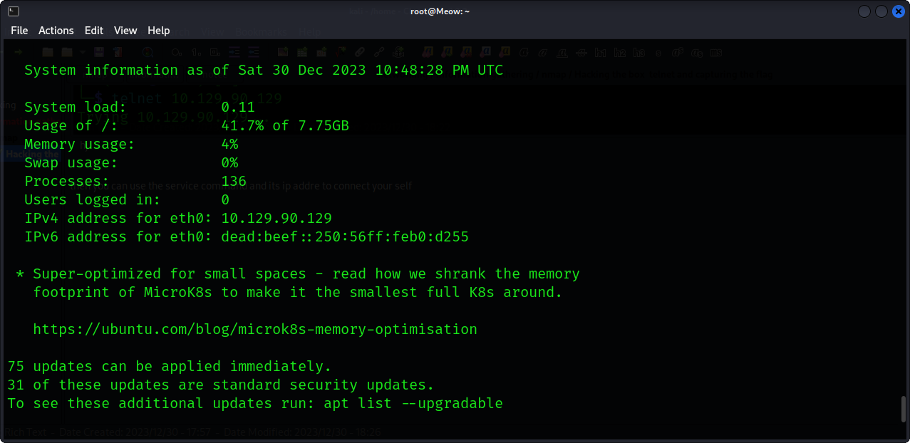

The procedure to how i started hacking the box
1 first is information gathering using nmap
second gather information to see which port are open
- you can run various command here using nmap
sudo nmap -p 22,23,53,80 10.129.90.129 -the ip is the ip of the box or target machine port you can scan any of your like
then from image you can see the open ports so you can use searchsploit tool to gather more information on open port
- use command
searchsploit telnet -telnet is name of service of open port
hhhh
k
then after that you can use still search sploit to help you locate various file
-searchsploit -x linux_mips/27132.txt
hj
then you can use the service command and its ip addre to connect your self
telnet 10.129.90.129 - the system will show if connected and then you will be prompted to login password is root and then you will have the priviledges
j
logged in you have all the priviledges